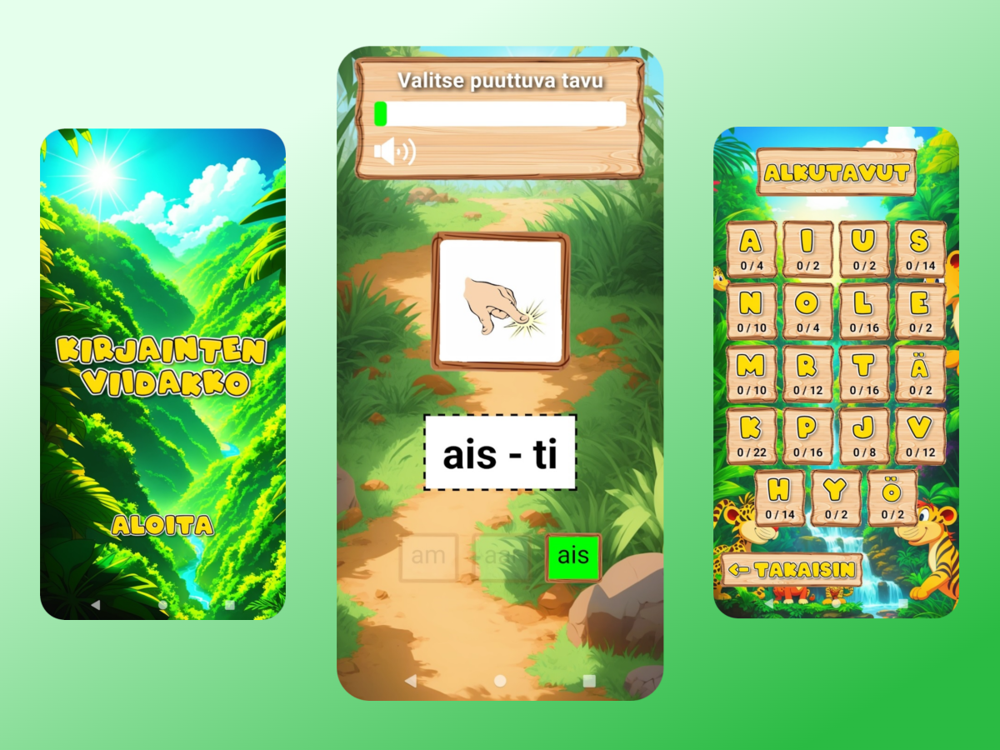
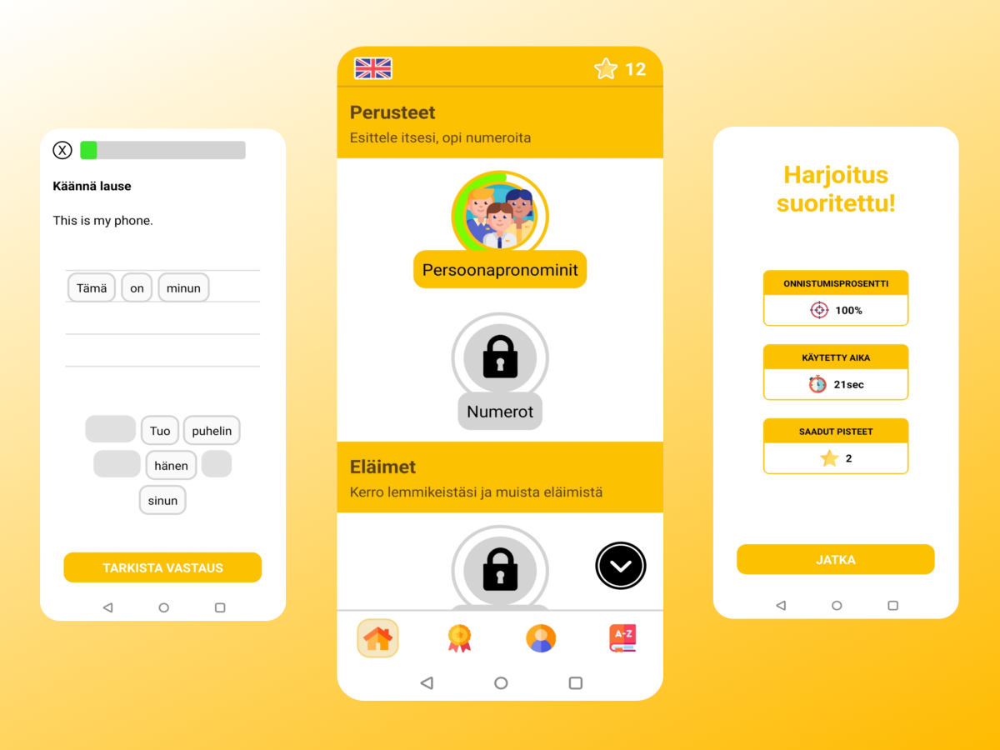
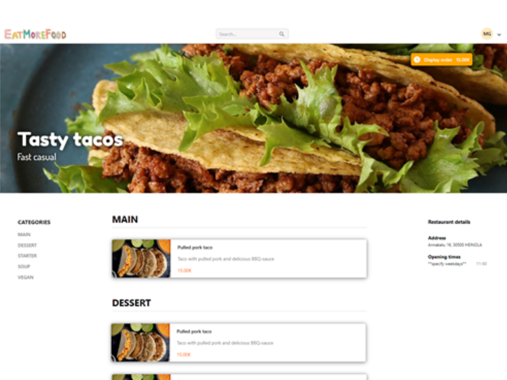
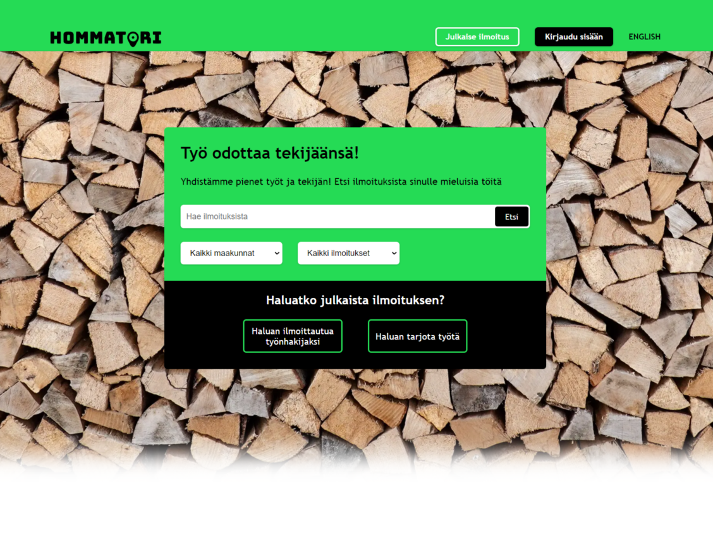

 Kirjainten viidakko
Kirjainten viidakko on suomalaiselle sähköisiä oppimateriaaleja tuottavalle Alfasoft Oy:lle työharjoittelussani kehittämä mobiilisovellus, joka pohjautuu Alfasoftin omaan selainpohjaiseen Kirjainten viidakko -tuotteeseen. Kirjainten viidakossa opetellaan eri harjoitusten kautta suomen kielen tavutuksen alkeita.
Sovellus on toteutettu React Nativella. Quattrolingo
Quattrolingo on opintoihini liittyvä mobiilikehitysprojekti, jossa ryhmänä kehitimme kielten opiskeluun tarkoitetun Duolingo-tyyppisen mobiilisovelluksen.
Sovellus on toteutettu React Nativella ja valtaosa koodista on itseni kasaamaa. EatMoreFood
EatMoreFood on opintoihini liittyvä web-kehitysprojekti, jossa ryhmänä kehitimme ruoan tilaamiseen tarkoitetun Wolt/Foodora-tyyppisen alustan. Projekti sisältää asiakkaalle ja ravintoloitsijalle omat palvelunsa.
Selainosiot on toteutettu Reactilla, palvelin käyttäen Node.js ajoympäristöä ja tietokantana on PostgreSQL. Valtaosa asiakaspuolen alustasta on itseni kasaamaa, kuten myös osa palvelimesta. Githubissa löytyy parempi esittely projektin README-tiedostosta, mutta demo ei enää ole toiminnassa. Hommatori
Hommatori on opintoihini liittyvä projekti, jossa ryhmänä kehitimme hanttihommien etsimiseen ja työtehtävien julkaisemiseen tarkoitetun palvelun. Palvelusta on sekä selain- että mobiilisovellusversio. Palvelusta työtä vailla oleva voi etsiä jonkun julkaisemia työilmoituksia. Hanttihomman tekijää vailla oleva voi kirjautuneena käyttäjänä julkaista työilmoituksia.
Selainosio on toteutettu Next.js:llä, palvelin käyttäen Node.js ajoympäristöä ja tietokantana on PostgreSQL. Selainosio ja osa palvelimesta ovat itseni kehittämää.
hommatori.azurewebsites.net löytyy Demo, joka pyörii Microsoftin Azuressa. Tietokanta ei kuitenkaan ole tällä hetkellä (10/2023) toiminnassa, joten sen kummempia ei alustassa voi tehdä. Lisäksi taustapalvelimen herääminen web-palvelimen herätteestä vie hieman aikaa, mistä johtuen esimerkiksi haku ei siirry tuloksiin ennen palvelimen heräämistä.